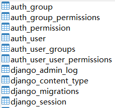
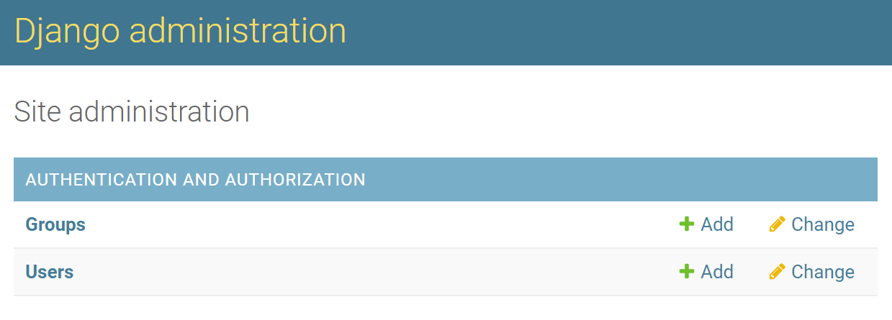
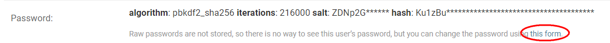
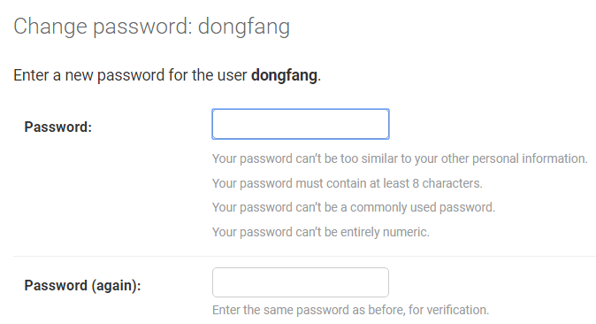
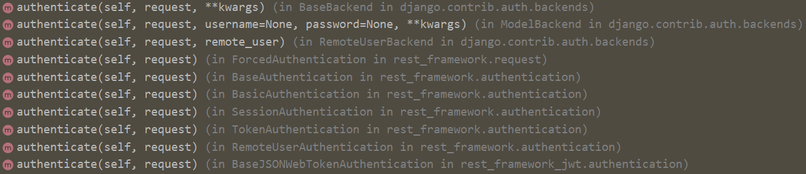
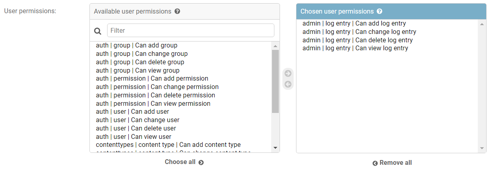
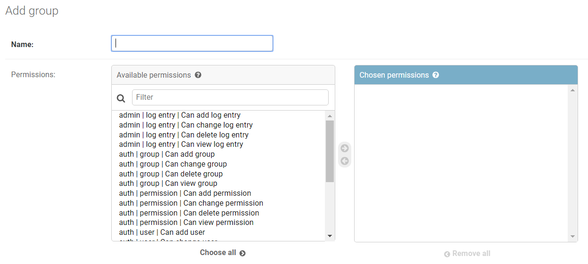
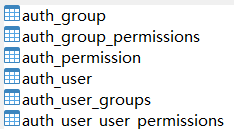
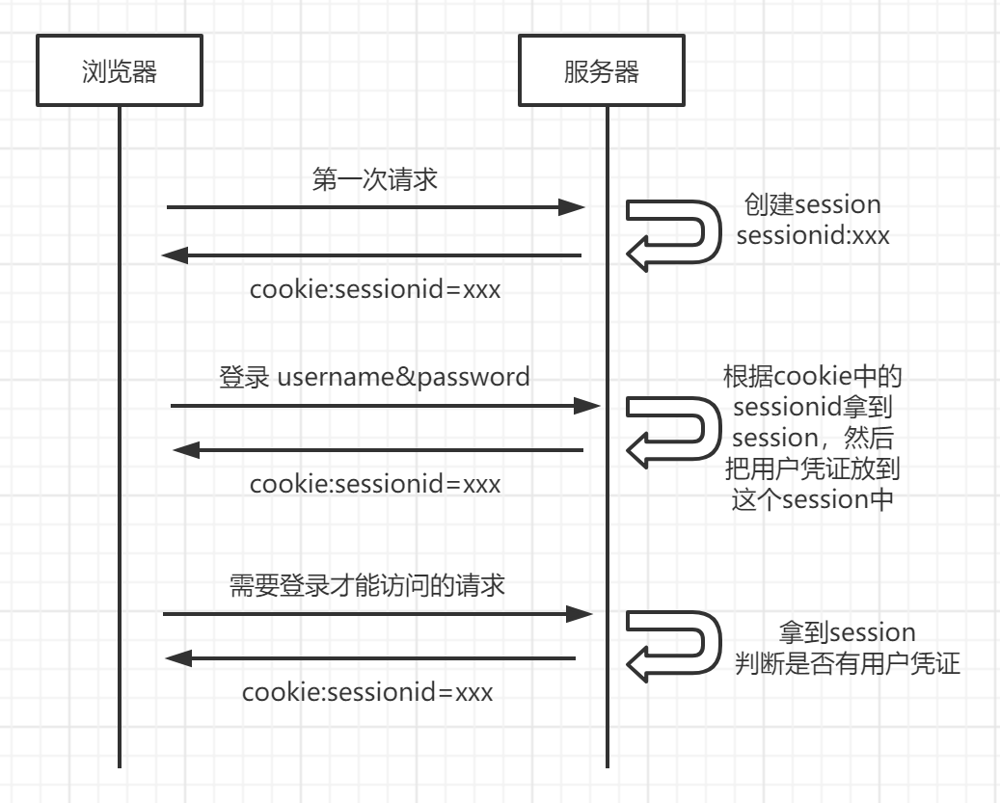

4 Django认证系统并不鸡肋反而很重要¶

在使用django-admin startproject创建项目后，Django就默认安装了一个采用session实现的认证系统。这是Django相比于其他框架的一大特点：自带认证系统，开箱即用。有人说它方便，有人说它鸡肋，但它作为Django的重要组成部分，学习它有助于我们理解Django框架的核心技术。
安装¶
Django默认已安装，可以在settings.py中的INSTALLED_APPS看到：
django.contrib.auth：认证系统内核，以及默认models等。
django.contrib.contenttypes：用于关联权限和models，从而赋予models的添加/删除等权限。
contrib翻译为普通发布版。
在MIDDLEWARE可以看到：
SessionMiddleware：session中间件。AuthenticationMiddleware：认证中间件。
使用python manage.py migrate后，数据库会新增认证系统的这些表：

认证与授权¶
认证的英文是authentication，授权的英文是authorization。单词不一样，咋看有点像。认证是指验证用户是谁。授权是指授予已认证用户权限。由于认证授权在某种程序上是耦合的，所以Django把它们统称为“认证”。
认证系统概览¶
认证系统的组成部分如下：
用户
权限
组
密码管理
登录相关表单（前后端分离不需要）和视图（接受Web请求并且返回Web响应）
Django框架是MTV模式，类似于MVC模式。Django的View对应MVC的Controller。
可配置的backend
以上是Django自带内容，如果需要更多功能，可以安装第三方包：
密码增强校验
登录限流
OAuth
对象级权限（django-guardian）
以Article举例，Django是模型级权限，用户只能具有全部文章的权限。django-guardian提供了对象级权限，可以对单篇文章进行授权。
models.User¶
User模型是Django认证系统的核心，它的主要属性包括：
id
username
email
password
is_active
is_superuser
last_login
date_joined
django.contrib.auth.models，在django.db.models之上封装了AbstractBaseUser、AbstractUser、User等模型。
创建超级管理员¶
cmd中使用createsuperuser命令：
$ python manage.py createsuperuser
根据提示输入username、email、password后，就会在数据库中创建1条超管用户。
创建用户¶
方法1 代码创建
在代码中使用create_user()函数来创建用户：
>>> from django.contrib.auth.models import User
# 创建用户并保存到数据库
>>> user = User.objects.create_user('john', 'lennon@thebeatles.com', 'johnpassword')
# 修改其他字段值
>>> user.last_name = 'Lennon'
>>> user.save()
方法2 管理后台创建
访问http://127.0.0.1:8000/admin/，用超管登录后，在界面上创建：

修改密码¶
方法1 命令行修改
python manage.py changepassword username
根据提示输入旧密码、新密码、确认密码即可。
方法2 代码中修改
>>> from django.contrib.auth.models import User
>>> u = User.objects.get(username='john')
>>> u.set_password('new password')
>>> u.save()
方法3 管理后台修改


用户认证¶
框架底层使用authenticate()函数对用户进行认证：
authenticate(request=None, **credentials)
credentials是用户凭证，如用户名、密码。
示例：
from django.contrib.auth import authenticate
user = authenticate(username='john', password='secret')
if user is not None:
# A backend authenticated the credentials
else:
# No backend authenticated the credentials
如果认证成功，authenticate()会返回User。如果用户凭证无效或者权限不足，认证后端抛出了PermissionDenied，authenticate()会返回None。
认证后端¶
认证后端（authentication
backends）是Django做用户验证的后端模块，默认为['django.contrib.auth.backends.ModelBackend']，只会简单比较请求的用户名密码和数据库中的用户名密码是否匹配。可以切换成其他认证后端，也可以重写authenticate()进行自定义。我点开了源码，发现除了Django的认证后端，DRF已经封装了Session、Token、JWT的认证：

权限管理¶
权限一般分为add、change、delete、view，也就是增删改查。
默认权限¶
Django会在python manage.py migrate的时候，为每个model创建4种权限：add、change、delete、view。
比如有个app叫做foo，它有个model叫做Bar，可以使用has_perm()函数来检查权限：
add：user.has_perm(‘foo.add_bar’)
change：user.has_perm(‘foo.change_bar’)
delete：user.has_perm(‘foo.delete_bar’)
view：user.has_perm(‘foo.view_bar’)
创建新权限¶
除了增删改查权限，有时我们需要更多的权限，例如，为myapp中的BlogPost创建一个can_publish权限：
方法1 meta中配置
class BlogPost(models.Model):
...
class Meta:
permissions = (
("can_publish", "Can Publish Posts"),
)
方法2 使用``create()``函数
from myapp.models import BlogPost
from django.contrib.auth.models import Permission
from django.contrib.contenttypes.models import ContentType
content_type = ContentType.objects.get_for_model(BlogPost)
permission = Permission.objects.create(
codename='can_publish',
name='Can Publish Posts',
content_type=content_type,
)
在使用python manage.py migrate命令后，就会创建这个新权限，接着就可以在view中编写代码判断用户是否有这个权限来决定能否发表文章。
授权¶
可以在管理后台对用户授权：

或者把用户分组后，按组来进行授权：

从数据库这6张表就能看出来，有用户表、分组表、权限表，以及它们的关联关系表：

其代码实现是把permission赋值给User.user_permissions或者Group.permissions属性。
代理模型权限¶
代理模型是从某个模型继承来的，不影响表结构，用于扩展行为实现代码解耦。
代理模型不会继承父类的权限，例如：
class Person(models.Model):
class Meta:
permissions = [('can_eat_pizzas', 'Can eat pizzas')]
# 代理模型
class Student(Person):
class Meta:
proxy = True
permissions = [('can_deliver_pizzas', 'Can deliver pizzas')]
>>> # 注意代理模型取ContentType需要加for_concrete_model=False
>>> content_type = ContentType.objects.get_for_model(Student, for_concrete_model=False)
>>> student_permissions = Permission.objects.filter(content_type=content_type)
>>> [p.codename for p in student_permissions]
['add_student', 'change_student', 'delete_student', 'view_student',
'can_deliver_pizzas'] # 没有父类的can_eat_pizzas权限
Session认证¶
Django认证系统是基于Session的。Django把Web请求封装成了request（HttpRequest类），然后通过中间件设置了session相关的属性：request.session、request.site、request.user。其中request.user就代表当前用户，如果未登陆它的值是AnonymousUser（匿名用户）的实例，如果已登陆它的值是User的实例。可以通过is_authenticated来判断是否已认证：
if request.user.is_authenticated:
# Do something for authenticated users.
...
else:
# Do something for anonymous users.
...
用户登录¶
我们先简单回顾一下基于session的登录过程：

Django提供了login()函数来登录，把用户凭证保存到session中。它的函数签名如下：
login(request, user, backend=None)
示例：
import json
from django.contrib.auth import authenticate, login
from django.http import HttpResponse
# Create your views here.
def my_view(request):
request_body = json.loads(request.body)
username = request_body["username"]
password = request_body["password"]
user = authenticate(request, username=username, password=password)
if user is not None:
login(request, user)
return HttpResponse("logged in")
else:
return HttpResponse("invalid login")
除了保存用户凭证，Django还会把认证后端也保存到session中，便于相同的认证后端下次可以直接获取到用户信息。至于保存哪个认证后端，Django按以下顺序选取：
使用
login()函数的backend参数值，如果赋值了的话。使用user.backend的值，如果有的话。
使用settings中
AUTHENTICATION_BACKENDS的值，默认['django.contrib.auth.backends.ModelBackend']。否则抛出异常。
用户登出¶
Django提供了logout()函数来登出。它的函数签名如下：
logout(request)
示例：
from django.contrib.auth import logout
def logout_view(request):
logout(request)
# Redirect to a success page.
登出后session会被销毁，所有数据都会被清除，以防止其他人使用相同的浏览器再次登录后获取到之前用户的session数据。
login_required¶
对于未登陆的用户，需要进行限制，必须先登陆才能进行访问。
传统方法
使用request.user.is_authenticated判断，然后重定向到登录页面：
from django.conf import settings
from django.shortcuts import redirect
def my_view(request):
if not request.user.is_authenticated:
return redirect('%s?next=%s' % (settings.LOGIN_URL, request.path))
# ...
或者错误页面：
from django.shortcuts import render
def my_view(request):
if not request.user.is_authenticated:
return render(request, 'myapp/login_error.html')
# ...
login_required装饰器
login_required(redirect_field_name='next', login_url=None)
示例：
from django.contrib.auth.decorators import login_required
@login_required
def my_view(request):
...
它的处理是这样的：
如果用户没有登录，就重定向到settings.LOGIN_URL（默认值
/accounts/login/），同时把当前的绝对路径添加到查询字符串中，如：/accounts/login/?next=/polls/3/。如果用户已经登录了，正常执行view代码。
login_required的redirect_field_name参数是指登陆认证成功后重定向的页面，默认保存在叫做next的查询字符串参数中（如/accounts/login/?next=/polls/3/）。可以修改为自定义：
from django.contrib.auth.decorators import login_required
@login_required(redirect_field_name='my_redirect_field')
def my_view(request):
...
不过修改后还需要同时修改login模板等。
login_required的login_url参数是指登录页面的url，可以自定义，默认是/accounts/login/，需要在URLconf中关联登陆视图：
from django.contrib.auth import views as auth_views
path('accounts/login/', auth_views.LoginView.as_view()),
function views和class-based views¶
function views（函数视图），视图是个函数：
from django.http import HttpResponse
def my_view(request):
if request.method == 'GET':
# <view logic>
return HttpResponse('result')
class-based views（基于类的视图），视图是个类：
from django.views import View
class MyView(View):
def get(self, request):
# <view logic>
return HttpResponse('result')
为什么需要cbv？因为类可以继承，提高代码复用。由于Django的URLconf只能接受函数，所以cbv有个as_view()方法用来返回一个函数：
# urls.py
from django.urls import path
from myapp.views import MyView
urlpatterns = [
path('about/', MyView.as_view()),
]
LoginRequiredMixin¶
Mixin是为了代码复用，从多个父类继承而来的类。如果使用的是class-based views，那么可以使用LoginRequiredMixin，来实现login_required的效果，例如：
from django.contrib.auth.mixins import LoginRequiredMixin
class MyView(LoginRequiredMixin, View):
login_url = '/login/'
redirect_field_name = 'redirect_to'
permission_required¶
除了需要登录，有些视图还需要权限。Django提供了permission_required装饰器，它的函数签名如下：
permission_required(perm, login_url=None, raise_exception=False)
示例：
from django.contrib.auth.decorators import permission_required
@permission_required('polls.add_choice')
def my_view(request):
...
permission_required的perm参数，指的是权限，可以是单个权限，也可以是权限列表。
permission_required的login_url参数和login_required的login_url作用一样。
permission_required的raise_exception参数，可以用来抛出异常，赋值为True后会跳转到403（HTTP
Forbidden）页面而非登录页面。
如果既想抛出异常 ，又想跳转到登录页面，那么可以同时添加这2个装饰器：
from django.contrib.auth.decorators import login_required, permission_required
@login_required
@permission_required('polls.add_choice', raise_exception=True)
def my_view(request):
...
PermissionRequiredMixin¶
如果使用的是class-based views，那么可以使用PermissionRequiredMixin，来实现permission_required的效果，例如：
from django.contrib.auth.mixins import PermissionRequiredMixin
class MyView(PermissionRequiredMixin, View):
permission_required = 'polls.add_choice'
# Or multiple of permissions:
permission_required = ('polls.view_choice', 'polls.change_choice')
修改密码导致session失效¶
登录成功后，Django会把加密后的密码hash值存入session中，每次请求时，会校验session中的密码和数据库中的密码是否匹配。如果修改了密码，数据库中的密码改变了，而session中的密码没有更新，那么密码就会匹配不上，导致session失效。django.contrib.auth的PasswordChangeView和user_change_password视图会在修改密码时更新session中的密码hash，来避免session失效。如果对修改密码的视图进行了自定义，那么可以使用update_session_auth_hash(request, user)来更新session中的密码，防止修改密码导致session失效。
认证视图¶
Django提供了登录、登出、密码管理等视图。最简单的使用方式是在URLconf中配置：
urlpatterns = [
path('accounts/', include('django.contrib.auth.urls')),
]
它会包含这些URL patterns：
accounts/login/ [name='login']
accounts/logout/ [name='logout']
accounts/password_change/ [name='password_change']
accounts/password_change/done/ [name='password_change_done']
accounts/password_reset/ [name='password_reset']
accounts/password_reset/done/ [name='password_reset_done']
accounts/reset/<uidb64>/<token>/ [name='password_reset_confirm']
accounts/reset/done/ [name='password_reset_complete']
name是别名，可以使用reverse()函数来获取，如
reverse('login')。
但有时我们需要自定义url，在URLconf中添加自定义url后，再加上相应视图即可，例如：
from django.contrib.auth import views as auth_views
urlpatterns = [
path('change-password/', auth_views.PasswordChangeView.as_view()),
]
所有的这些视图都是class-based views，便于继承后重写进行自定义。
Django提供的相关视图有LoginView、LogoutView、PasswordChangeView、PasswordChangeDoneView、PasswordResetView、PasswordResetDoneView、PasswordResetConfirmView、PasswordResetCompleteView。
快速上手体验¶
如果想快速上手体验，可以按如下步骤进行操作：
pip install django，安装Django。django-admin startproject project_name，创建Django项目。python manage.py migrate，数据迁移，使用自带SQLite数据库即可。python manage.py createsuperuser，创建超级管理员。python manage.py runserver，启动项目。访问
http://127.0.0.1:8000/admin/，用超管登录管理后台。
就可以使用Django自带认证系统了。
小结¶
本文介绍了Django自带的基于session的认证系统，阐述了用户、组、认证与授权的相关概念，以及session认证的技术细节，最后讲解了如何快速上手体验的操作步骤。虽然如今基于session认证用的很少了，但它却是理解Token、JWT认证的基础，仍然值得我们学习。